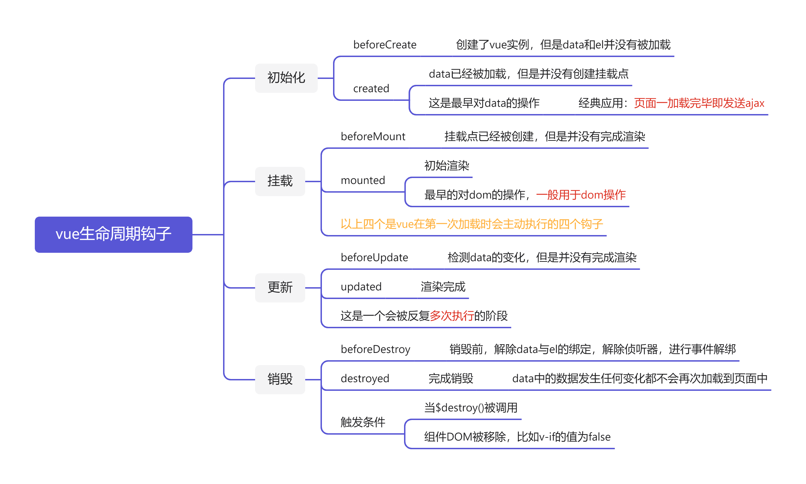

生命周期就是一个组件从创建到销毁的整个过程
vue的生命周期钩子：vue从创建到销毁的过程中，会执行的一些回调函数
钩子实际上就是一种回调函数。
生命周期的“出生期”如果进行细分可以分为以下阶段
销毁期：解除data与el的关联，也就是说修改了data，页面不会再被渲染了
Special
Tips：每一个生命周期钩子中的this都是指向vue实例，所以生命周期钩子不能是箭头函数
四个阶段分别为：初始化 created 挂载 mount 更新 updated 销毁 destory
八个方法如下表：
| 执行顺序 | 钩子函数 | 执行时机 |
|---|---|---|
| 1 | beforeCreate(){} |
vue实例创建了，但是el和data还没有创建(初始化vue实例) |
| 2 | created() {} |
data数据创建了，但是el挂载点还没有创建(初始化data中的数据和methods中的方法) |
| 3 | beforeMount() {} |
el挂载点创建了，但是data数据还没有渲染(底层：创建el挂载点，并且生成虚拟DOM) |
| 4 | mounted() {} |
data数据 第一次 渲染完毕(将虚拟dom渲染成真实DOM) |
| 5 | beforeUpdate() {} |
检测到data数据变化，但是还没有开始重新渲染(这是一个会多次执行的钩子) |
| 6 | updated() {} |
变化后的data数据 ，完成渲染到页面(这是一个会多次执行的钩子) |
| 7 | beforeDestroy() {} |
vue实例销毁即将销毁，解除data与el的关联，之后修改data，页面不会被渲染(解除 事件绑定、侦听器、组件) |
| 8 | destroyed() {} |
vue实例已经销毁 |
这个阶段发生的动作有：
beforeCreate钩子
这个钩子初始化vue实例，但是data中的数据并没有被创建
created
初始化data中数据，但是并没有挂载到页面
经典应用 ： 页面一加载, ajax请求数据渲染页面的过程一般写在这个钩子里面。（即页面一加载就发送ajax）
这个阶段发生的动作有：
1.template选项检查
有 - 当前vue环境是脚手架， webpack就会编译.vue文件
没有- 当前vue环境是html环境
虚拟DOM挂载成真实DOM之前
beforeMount – 生命周期钩子函数被执行
把虚拟DOM和渲染的数据一并挂到真实DOM上
真实DOM挂载完毕
mounted – 生命周期钩子函数被执行
beforeMount
根据你的vue代码环境(html环境与脚手架环境),来编译模板html结构，完成el挂载点加载（生成虚拟DOM），但是并没有挂载数据
mounted
虚拟DOM和渲染的数据一并挂到真实DOM上，简单来说就是把data中的数据渲染到挂载点上，这个钩子是最早可以获取页面DOM元素的钩子
经典应用：初始渲染，默认的第一个按钮，聚焦等都会在这个钩子中完成
vue在第一次渲染的时候只会执行创建和挂载阶段的四个钩子
这个阶段发生的动作有：
beforeUpdate
检测data数据变化， 修改虚拟DOM，但是并没有完成渲染
updated
完成data渲染（将虚拟DOM渲染成真实DOM）
update是可以被多次执行的钩子，但是我们在开发中并不常用，因为这个钩子存在极大的性能问题，任何一个数据的变化都会执行它，出于性能的考虑我们更多的会使用侦听器或者计算属性。
这个阶段发生的动作有：
销毁阶段的触发条件
$destroy()被调用v-if的值为falsebeforeDestroy
这个钩子准备移除你的组件，移除数据监视器，侦听器等
destroyed
销毁结束，在此之后，data无论做任何更改都不会被加载到页面上去
销毁后控制台会出现红色的提示，但这并非报错哦
babel：完成JS从高版本转向低版本的转换，使代码有更好的兼容性
TS：JS的延伸，广泛的应用于vue3的项目（不支持vue2）
Web App：小程序（已经淘汰）
Router：项目
Vuex：项目
css-processors：预处理，使框架可以处理less
Lint/Formatter：提示严重error
Testing：测试
ES Lint ：绝大多数的情况下我们都默认选择standard标准模式
Lint on save 保存即检查 on commit 提交检查
In dedicated 加文件存储配置 In json 在已有的package中存配置